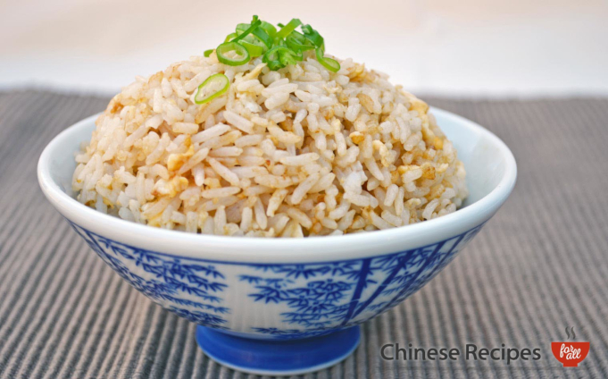

Home
Egg fried rice

Description
Egg fried rice is a versatile dish that
can be served as a main course or a side dish, and can be
customized to suit individual preferences by adding
different vegetables or proteins.
It is also an excellent way to use up leftover rice,
as the grains can become dry and hard
if left in the fridge for too long.
Egg fried rice is a simple yet flavorful dish
that is enjoyed by people all over the world,
and is a great choice for a quick and easy meal
that can be made in under 30 minutes.
Ingredients
- 1 tbsp extra virgin olive oil
- 2 eggs
- 200g basmati rice
- Soy sauce
- 1 spring onion
Steps
- Cook the basmati rice according to package instructions and let it cool.
- Beat the eggs in a bowl and set aside.
- Heat the olive oil in a large pan or wok over medium-high heat.
- Add the beaten eggs to the pan and scramble them until they are fully cooked.
- Add the cooled basmati rice to the pan with the scrambled eggs and stir-fry for a few minutes, making sure to break up any clumps of rice.
- Drizzle soy sauce over the rice and eggs to taste, stirring to combine.
- Chop the spring onion and sprinkle it over the top of the dish.
- Serve and enjoy!